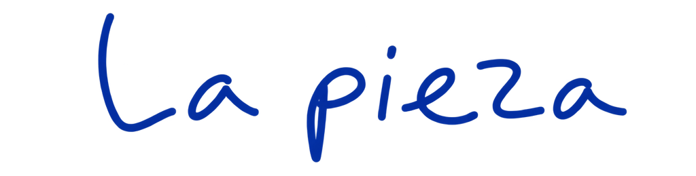

Teaser
Una primera entrada al universo de Los lunares del Puma.
1 min 25 s · Subtítulos en castellano
Danza · sonido · ensayo performativo
¿Qué ocurre cuando el zapateado flamenco se despliega desde la horizontalidad y la inversión?
Hip hop · flamenco · danza contemporánea · Performance
Sigue bajando ↓
Los lunares del Puma surge de la escucha: Adrián Vega atiende a su propio sonido, explora sus cadencias y reconoce en su cuerpo un patrimonio intercultural nacido del cruce entre el hip hop y el folclore.
La pieza toma como eje el zapateado flamenco, trabajado como materia rítmica y poética que se mimetiza con la corporalidad del breaking y se expande hacia las texturas de la danza contemporánea. El zapateo se despliega en horizontal, en caída y en inversión. Desde ese territorio, la pieza ensaya una respuesta a cuánto de flamenco habita en el cuerpo de Vega y cómo acercarse a esa tradición sin entrar en el estereotipo.
En esa fricción amable aparecen residuos, marcas y huellas que configuran una presencia escénica singular: el Puma. Una figura que nombra la diferencia y propone un modo de situarse cuando la respuesta no es «soy flamenco», sino «soy un Puma».
Los lunares son el hábitat de esa figura. También son manchas. También pueden ser ventanas desde las que mirar, activar y reproducir memorias del movimiento. Ritmo, compás y pulso configuran un paisaje sonoro y visual que revela la huella del gesto y la intensidad de su vibración.
Con esta pieza, Adrián Vega propone una experiencia cercana y visceral dentro de su investigación sobre las danzas de ida y vuelta: un encuentro entre la memoria del cuerpo y la vibración del presente.


Un espacio para escuchar.
Los lunares del Puma nos propone una experiencia voyeur donde cualquier espacio puede transformarse en la sala de ensayo del artista. El compás y el ritmo son los elementos más destacados de la pieza, además de explorar el cuerpo humano y sus texturas a partir de la sonoridad del espacio por donde él se mueve.
En la actualidad ser streamer es algo común, nuestra relación con las cámaras pertenece a lo cotidiano y compartir nuestras actividades y procesos se ha convertido en un hábito. Adrián Vega aprovecha la cercanía de las herramientas digitales para explorar el formato de vídeo blog performativo, donde lo virtual y lo presencial convergen para estimular la curiosidad y profundizar en la idea del proceso creativo como un resultado artístico en sí mismo.

«Los lunares del Puma surge del proceso de escucharme a mí mismo, de atender a mi sonido, de entender la interculturalidad, del patrimonio corpóreo y sonoro que he generado gracias al encuentro con la danza. Los lunares son un hábitat, son una ventana por donde mirar. El puma es mi adolescencia, acceder y comprender los códigos del Hip Hop. También es mi post adolescencia, que me brinda una perspectiva contemporánea desde donde puedo observar, convivir y dejar que el puma mire y se relacione con los flamencos.»Adrián Vega
Una primera entrada al universo de Los lunares del Puma.
1 min 25 s · Subtítulos en castellanoVersión site specific de Los lunares del Puma.
26 min 39 s · Subtítulos en castellanoRegistro de la pieza en Escena Xixón, sin la charla final y con los aplausos del cierre.
43 min 51 s · Subtítulos en castellanoUn espacio de transmisión: compartir la investigación corporal de la pieza a través de un workshop.
Workshop · Transmisión · 1 min 33 s
Me llamo Adrián Vega, un coreógrafo graduado del Institut del Teatre y profesor visitante en el conservatorio profesional de danza de Barcelona. Me considero un artista post-Hip Hop y mi interés y práctica coreográfica se basan en la hibridación, la especulación sobre lenguajes de movimiento y el trabajo de suelo.
Actualmente, gracias a mi conexión con el flamenco y la música, estoy particularmente interesado en la sonoridad del cuerpo y cómo se puede utilizar en la danza y la creación contemporánea. En 2013, me sumergí en las artes escénicas como cofundador del colectivo Iron Skulls Co, donde exploramos las relaciones entre las danzas urbanas, la danza contemporánea y la teatralidad, desarrollando una forma de hacer que llamamos «theatrical breakin’». Mis propuestas han sido seleccionadas para varios festivales internacionales, como Breakin’ Convention en Londres, Summer Dance Forever en Ámsterdam, Summer Stage en Nueva York y Hip Hop International en San Francisco.
Actualmente, junto con Marina Pravkina en la plataforma Jazzbetween y con Juan Carlos Llérida en Postablao y Doce, he trabajado en el laboratorio de investigación empírica del flamenco, una mirada al flamenco a través de la experiencia que ayuda a expandir nuestra comprensión del folclore.
Los eventos de 2020 hicieron que mi visión artística cambiara, y comencé a explorar temas autobiográficos, flamenco invertido y post-Hip Hop. Mi primera pieza, «We are just okey», donde la idea de caer me llevó a trabajar en zapateado desde la inversión y en total silencio, para entender el sonido del impacto desde la caída. Aquí es donde surgió mi interés por la performatividad, lo cotidiano y la estética brutalista. Mi segunda creación es una coproducción entre ICUB y Mercat de les Flors con el programa de residencia. La pieza se llama «Título provisional» y se centra en la motivación intrínseca de la preadolescencia en un videoblog performativo.
En 2022, me convertí en residente en La Caldera, donde encontré una gran libertad poética. Todo lo que he trabajado antes me ha nutrido para llevar a cabo el proyecto «Los lunares del Puma», donde creo un largo solo, una instalación y dos talleres que se centran en el proceso creativo en lugar del resultado, y donde puedo hablar sobre mi relación con las cámaras, la sonoridad del cuerpo y la apropiación cultural.
Un solo que puede habitar distintos espacios.
Contacto